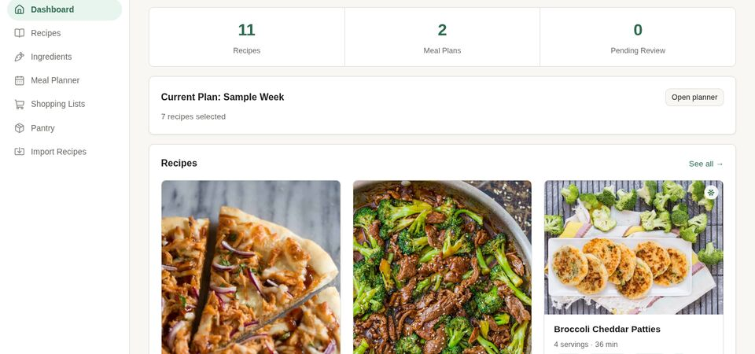

featured project
foodplanner
local-first meal planning · private repo
runs our household's actual grocery list, every week — not just a demo.
a household budgeting and meal-planning app for picking recipes that share ingredients, runs a seeded greedy pass with swap-based local search, weighted by how fast each ingredient actually spoils. the demo runs on read-only sample data if you want to poke around.
solo project · concept, algorithm design, full-stack build
- sqlite
- local-first
- max-coverage